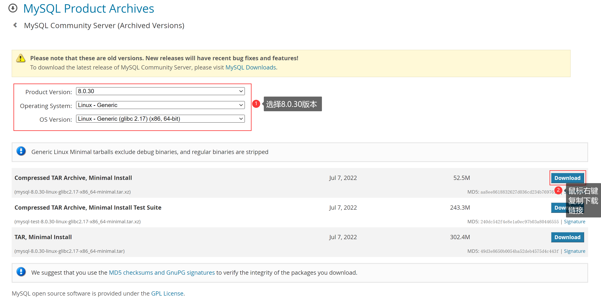
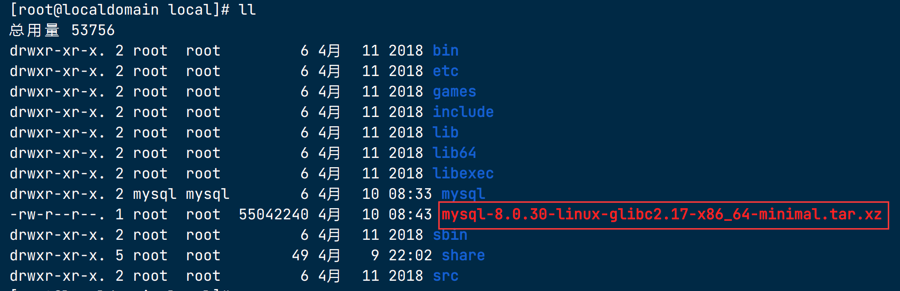
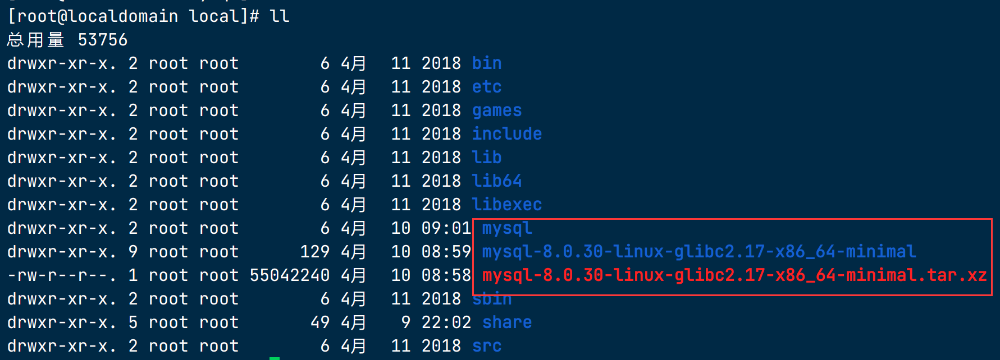
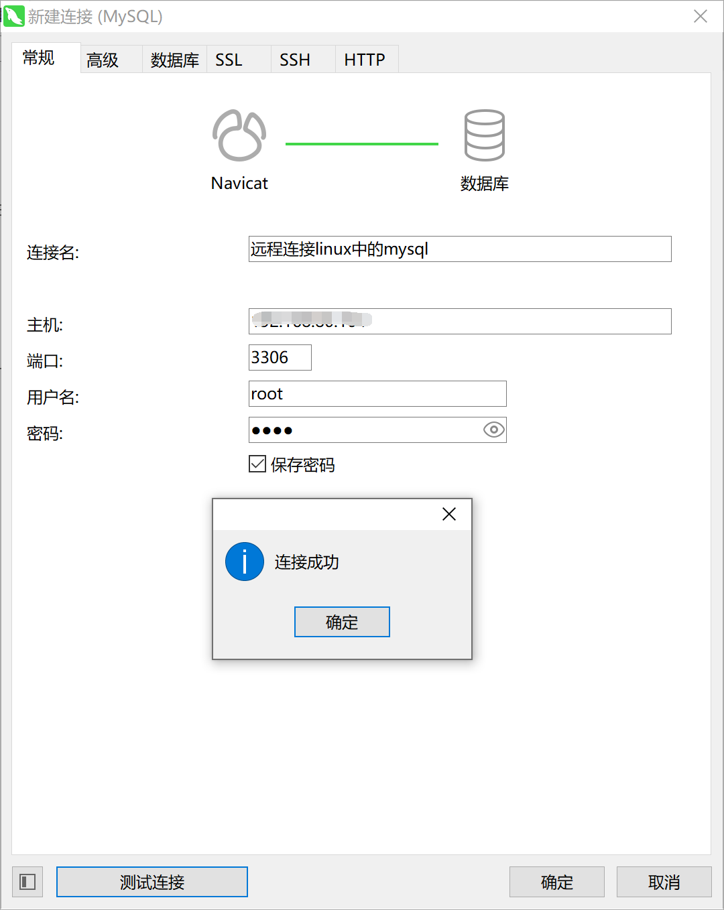

ContOS7安装MySQL8.0¶
在CentOS 7中手动下载MySQL 8或以上版本，并进行安装、配置以及设置开机自启动的详细步骤如下：
1. 检查系统中是否已安装MySQL¶
| Bash | |
|---|---|
如果输出了一列MySQL相关的包，则表明系统中已经安装了MySQL。
1.1 卸载已存在的MySQL¶
- 首先停用并关闭MySQL服务（如果正在运行）
- 使用yum卸载MySQL及其相关组件
| Bash | |
|---|---|
- 清理残留文件（如配置文件和数据目录）
- 有些系统可能还需要清理/etc/sysconfig/mysql或/etc/my.cnf.d目录下的文件
2. 下载MySQL¶
-
访问MySQL官网：首先访问MySQL官方网站（https://dev.mysql.com/downloads/mysql/），找到MySQL Community Server的最新版本下载链接。
-
选择版本：根据你的CPU架构选择合适的MySQL版本下载，通常会选择tarball (.tar.gz) 归档文件。

- 进入到
/usr/local/目录下，下载压缩包放在此处
| Text Only | |
|---|---|
- 下载至服务器：通过
wget命令下载到CentOS服务器上，例如：
| Bash | |
|---|---|
注意：请确保URL是实际的MySQL下载链接，这里提供的只是一个示例。

3. 安装前的准备工作¶
在CentOS 7中，将mysql-8.0.30-linux-glibc2.17-x86_64-minimal.tar.xz压缩包解压/usr/local/mysql目录
3.1 解压到/usr/local/mysql目录¶
- 确保目标目录存在（如果尚未创建）：
| Bash | |
|---|---|
- 移动压缩包到目标目录（如果尚未在目标目录）：
- 在目标目录解压压缩包：
| Bash | |
|---|---|

-x表示解压，-J表示使用xz压缩算法，-f指定要解压的文件。
4. 环境资源准备¶
4.1 新建用户组¶
groupadd mysql是用于创建名为 "mysql" 的用户组。groupadd命令用于在 Linux 系统中创建新的用户组。在这里，我们创建了一个名为 "mysql" 的用户组，该用户组将用于将 MySQL 相关的用户归类到同一组中。
useradd -r -g mysql -s /bin/false mysql是用于创建名为 "mysql" 的系统用户，并将其分配到 "mysql" 用户组中。useradd命令用于在 Linux 系统中创建新的用户。在这里，我们创建了一个名为 "mysql" 的系统用户，并使用-r参数指定该用户为系统级别的用户，-g mysql参数将其分配到 "mysql" 用户组中，-s /bin/false参数指定该用户的登录 shell 为/bin/false，即禁止其登录系统。
这样，通过创建 "mysql" 用户和用户组，可以提供更安全的权限管理和隔离，使得 MySQL 进程以及相关文件仅限于 "mysql" 用户和用户组的权限。这是一种常见的做法，可以帮助保护系统的安全性和稳定性。
4.2 创建目录和设置文件权限¶
| Bash | |
|---|---|
mkdir -p /usr/local/mysql /data/mysql/：使用mkdir命令创建目录。-p参数表示递归创建目录，即如果父目录不存在，也会一同创建。在这里，我们创建了/usr/local/mysql和/data/mysql/这两个目录。chown -R mysql.mysql /usr/local/mysql/：使用chown命令更改文件（或目录）的所有者和所属组。-R参数表示递归更改，即对目录及其子目录中的所有文件都进行更改。在这里，我们将/usr/local/mysql/目录及其子文件（如果有）的所有者设置为 "mysql" 用户，所属组也设置为 "mysql" 组。chown -R mysql.mysql /data/mysql/：同样使用chown命令，将/data/mysql/目录及其子文件的所有者和所属组设置为 "mysql" 用户和 "mysql" 组。chmod -R 755 /data/mysql/：使用chmod命令更改文件（或目录）的权限。-R参数表示递归更改，即对目录及其子目录中的所有文件都进行更改。在这里，我们将/data/mysql/目录及其子文件的权限设置为 755，其中所有者具有读、写和执行权限，组和其他用户具有读和执行权限。chmod -R 755 /usr/local/mysql/：同样使用chmod命令，将/usr/local/mysql/目录及其子文件的权限设置为 755，其中所有者具有读、写和执行权限，组和其他用户具有读和执行权限。
这些命令的执行将为 MySQL 相关的目录设置了适当的所有者和权限，以确保 MySQL 进程和文件可以正常访问和操作。
4.3 安装MySQL8必要的依赖¶
| Bash | |
|---|---|
4.4 初始化 MySQL 数据目录¶
| Bash | |
|---|---|
/usr/local/mysql/bin/mysqld：指定了 MySQL 服务器的二进制文件路径，用于启动和管理 MySQL 服务器。--initialize-insecure：这是一个选项，告诉 MySQL 初始化过程中不使用密码。这将生成一个随机的 root 用户密码，但不要求使用该密码进行访问。--user=mysql：这是指定 MySQL 服务器以 "mysql" 用户身份运行的选项。这确保了 MySQL 进程以指定的用户身份运行，以提高安全性。--basedir=/usr/local/mysql：指定 MySQL 安装的基础目录路径。这是 MySQL 安装的根目录，包含二进制文件和其他相关文件。--datadir=/data/mysql：指定 MySQL 数据目录的路径。这是 MySQL 存储数据库文件的位置，包括表数据、日志和其他数据文件。
通过执行此命令，MySQL 将初始化数据目录 /data/mysql，创建必要的目录和文件，并生成一个随机的 root 用户密码。请注意，--initialize-insecure 选项意味着没有密码保护，因此请谨慎使用，并在实际生产环境中考虑使用更安全的初始化方法。
4.4.1 初始化完毕，会打印如下日志信息¶
4.5 修改 MySQL 配置¶
4.5.1 在 /etc 目录下创建 my.cnf 的备份文件¶
cd /etc：使用cd命令进入/etc目录，这是存放系统配置文件的目录。cp my.cnf my.cnf.back：使用cp命令进行文件拷贝。my.cnf是 MySQL 的配置文件，my.cnf.back是备份文件名。这个命令会将my.cnf复制为my.cnf.back，以创建一个my.cnf的备份文件。
通过执行该命令，将在 /etc 目录下创建一个 my.cnf.back 的备份文件，以防止在修改 my.cnf 时意外丢失或损坏原始文件。备份文件可以用于恢复原始配置或进行对比，以了解所做的更改。
4.5.2 修改mysql配置信息¶
- 通过vi编辑器编辑
my.cnf
| Bash | |
|---|---|
- 将
/etc/my.cnf内容替换
4.6 将 MySQL 的二进制文件路径添加到系统的环境变量中¶
echo "export PATH=/usr/local/mysql/bin:$PATH" >> /etc/profile：使用echo命令将字符串"export PATH=/usr/local/mysql/bin:$PATH"追加到/etc/profile文件的末尾。这个命令将 MySQL 的二进制文件路径/usr/local/mysql/bin添加到系统环境变量$PATH中，以便在终端使用时可以直接调用 MySQL 的命令。source /etc/profile：使用source命令重新加载/etc/profile文件，使所做的更改立即生效。这样，系统环境变量中新增的 MySQL 的二进制文件路径将立即生效，而不需要注销或重新登录。
通过执行这两个命令，将 MySQL 的二进制文件路径添加到系统的环境变量中，以便可以直接在终端中调用 MySQL 的命令。这样，无论您在哪个目录，都可以直接运行 MySQL 的命令。
4.7 配置启动脚本¶
- 复制启动脚本文件
| Bash | |
|---|---|
cp /usr/local/mysql/support-files/mysql.server /etc/init.d/mysqld：使用cp命令进行文件复制。/usr/local/mysql/support-files/mysql.server是 MySQL 的启动脚本文件，/etc/init.d/mysqld是目标复制的位置。
通过执行这条命令，将 MySQL 的启动脚本复制到 /etc/init.d/mysqld 的位置。这样，可以将 MySQL 添加为系统服务，并使用 /etc/init.d/mysqld 来启动、停止、重启和管理 MySQL 服务。这是一种常见的方式，使得 MySQL 可以像其他系统服务一样进行管理。
- 给启动脚本文件赋予执行权限
| Bash | |
|---|---|
chmod +x /etc/init.d/mysqld：chmod是一个用于修改文件权限的命令，+x参数表示添加可执行权限。通过执行这条命令，我们将/etc/init.d/mysqld文件设置为可执行，即允许该文件作为脚本被执行。
这个命令的执行将使 /etc/init.d/mysqld 文件具有可执行权限，这意味着我们可以通过执行该文件来启动、停止或重启 MySQL 服务。在 Linux 系统中，可执行权限是管理和执行脚本、程序和服务的重要权限之一。
- 重启 MySQL 服务的命令
| Bash | |
|---|---|
这是一条用于重启 MySQL 服务的命令。下面是对该命令的解释：
service mysqld restart：这条命令用于重新启动 MySQL 服务器的服务。service是用于管理系统服务的命令，mysqld是 MySQL 服务器的服务名称，restart是指定重新启动服务的操作。
通过执行这条命令，将会停止当前运行的 MySQL 服务，并重新启动它。这样，可以使任何针对 MySQL 服务器的配置更改或重要操作生效。在服务重新启动后，MySQL 服务器将以新的配置或更改的设置重新启动，并开始接受来自客户端的连接和请求。
5. 配置 MySQL 开机启动¶
| Bash | |
|---|---|
chkconfig --level 345 mysqld on：这条命令用于配置 MySQL 服务在运行级别 3、4 和 5 下启用（开机自启动）。chkconfig命令用于管理系统服务的运行级别配置。--level 345：这是一个选项，指定要配置的运行级别。在这里，我们指定了运行级别 3、4 和 5，这些运行级别通常是多用户模式下的默认级别，包括网络服务。mysqld：这是指定要进行配置的服务名称，即 MySQL 服务器的服务名称。
通过执行这条命令，将会设置 MySQL 服务在运行级别 3、4 和 5 下启用（开机自启动）。这样，当系统启动到指定的运行级别时，MySQL 服务将自动启动并可供使用。这对于确保 MySQL 服务器在系统启动时可用非常有用。
6. 登录MySQL修改密码¶
安装完毕后，root用户默认没有密码，可以通过如下命令登录并修改root用户密码
| Bash | |
|---|---|
按回车，即可无密码登录，可以通过如下命令创建用户
创建一个用户名为 root 的用户，密码初始化为 root（可根据自定义需求修改）
| Bash | |
|---|---|
CREATE USER 'root'@'%' IDENTIFIED BY 'root';：这条命令用于创建一个名为 'root' 的用户，并将其与 '%' 主机关联。'root'@'%'表示用户名为 'root'，可从任意主机连接到 MySQL 服务器。IDENTIFIED BY 'root'指定了用户的密码，这里将密码设置为 'root'。
通过执行这条命令，将创建一个名为 'root' 的用户，并赋予它在 MySQL 服务器上进行连接和操作的权限。这个用户可以从任意主机连接到 MySQL，并使用指定的密码进行身份验证。请注意，创建 'root' 用户并将其与 '%' 主机关联是一种不太安全的做法，因为允许来自任意主机的连接。在生产环境中，建议限制 'root' 用户的访问权限并使用更复杂的密码
7. MySQL 授权远程访问¶
- 赋予权限，并配置可访问的 ip
GRANT ALL PRIVILEGES ON *.* TO 'root'@'%';：这条命令授予 'root' 用户在所有数据库和所有表上执行所有操作的权限。ALL PRIVILEGES表示授予所有权限，*.*表示适用于所有数据库和所有表，'root'@'%'表示将授权应用于用户名为 'root'，且可以从任意主机连接到 MySQL 服务器的用户。通过执行这条命令，'root' 用户将具有对 MySQL 中所有数据库和所有表的完全权限。
FLUSH PRIVILEGES;：这条命令用于刷新权限，使新的授权立即生效。在 MySQL 中，当对权限进行更改后，需要执行该命令以使更改生效。
通过执行这两条命令，将授予 'root' 用户在所有数据库和所有表上执行所有操作的权限，并确保新的授权立即生效。
请注意，授予 'root' 用户全部权限并允许 '%' 主机的连接是一种不太安全的做法，因为它允许来自任意主机的连接。在生产环境中，建议限制 'root' 用户的访问权限，并仅允许受信任的主机连接。此外，为 'root' 用户设置更复杂和安全的密码也是很重要的。
- 配置防火墙规则
如果要远程访问 MySQL，操作系统需要打开 MySQL 的默认 3306 端口的访问权限
firewall-cmd --zone=public --add-port=3306/tcp --permanent：这条命令用于向防火墙配置中添加一个允许传入的 TCP 端口规则。--zone=public指定将规则应用于 "public" 区域，--add-port=3306/tcp指定要添加的端口为 3306，--permanent表示将更改永久保存。这意味着该端口将被打开并允许传入的 TCP 连接，以便在该端口上提供服务（在这里是 MySQL 的默认端口）。firewall-cmd --reload：这条命令用于重新加载防火墙配置，以使最新的更改生效。通过执行此命令，防火墙将重新加载配置文件，并应用任何新的添加或修改的规则。
通过执行这两个命令，将防火墙配置中添加一个允许传入的 TCP 端口规则，并重新加载防火墙以使更改生效。这样，就可以允许在该端口上的传入连接，例如允许 MySQL 服务器监听和响应来自其他主机的连接。这对于确保服务的可访问性非常重要。
8. 测试远程连接¶

9. （备用）修改 MySQL 的密码¶
-
使用以下命令以 root 用户身份登录到 MySQL 服务器：
Text Only -
提示您输入密码，请输入当前的 MySQL root 用户密码。
-
成功登录后，执行以下命令来修改密码，将
密码替换为您想要设置的新密码：SQL -
如果您还想修改远程访问的 root 用户的密码，请使用以下命令：
SQL -
最后，刷新权限以使更改生效：
SQL
现在，您已成功修改了 MySQL 的密码。请确保将 密码 替换为您自己的新密码，并牢记它以供将来使用。